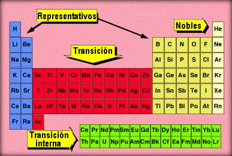

Estructura de la Tabla Periódica
Existe una relación entre el comportamiento químico de los elementos originados por su configuración electrónica y su ubicación en la tabla periódica.
En la tabla periódica actual los elementos se organizan en grupos y periodos. Los periodos son siete filas horizontales señaladas con números del 1 al 7. Los 3 primeros son grupos cortos y los siguientes son largos. Los grupos de elementos son las columnas verticales y son 18.
Existen varias clasificaciones, una de ellas
Los Elementos Representativos
- 1 (metales alcalinos)
- 2 (metales alcalinos térreos)
- 13 (Familia del boro)
- 14 (familia del carbono)
- 15 (familia del Nitrógeno)
- 16 (calcógenos)
- 17 (halógenos)
- 18 (gases nobles)

Fuente: Autor Marifer Chi Pérez
Los Elementos de Transición
- Grupo 3 (elementos de transición interna)
- Periodo 6 (metales lantánidos)
- Periodo 7 (metales actínidos)
Las propiedades de los elementos químicos son consecuencia del ordenamiento de los electrones en los niveles de energía más externos.
En los elementos representativos se observa que:
| Todos los elementos de un mismo grupo tienen, por regla general, igual configuración electrónica en su nivel más externo. El número de grupo indica la cantidad de electrones que hay en ese nivel. |
La importancia de los electrones exteriores es que participan en las reacciones químicas, lo que explica por qué los elementos de un mismo grupo tienen propiedades similares
| El número de electrones aumenta de uno en uno, mientras que el número de niveles de energía es el mismo para todos los elementos de un mismo periodo. |

En los siguientes videos podrás encontrar mas sobre la Tabla Periódica y sus propiedades:
BLOQUES DE LA TABLA PERIÓDICA
Teniendo en cuenta las configuraciones externas de los átomos de los elementos, observamos 4 bloques dentro de la tabla periódica.
- El bloque S: comprende dos grupos que incluyen los elementos cuyas configuraciones electrónicas externas se ubican en el subnivel S (este subnivel tiene un solo orbital, que pueden contener dos electrones como máximo).
- El bloque P: comprende seis grupos que incluyen los elementos cuyas configuraciones electrónicas externas se ubican en el subnivel P (este subnivel presenta tres orbitales capaces de alojar 6 electrones como máximo).
- El bloque d: está formado por los elementos de transición. comprende los elementos cuyas configuraciones electrónicas externas se ubican en el subnivel d (este subnivel presenta cinco orbitales capaces de alojar 10 electrones como máximo).
- El bloque f: comprende 14 grupos, está formado por los elementos de transición interna. Comprende los elementos cuyas configuraciones electrónicas externas se ubican en el subnivel f (este subnivel presenta siete orbitales capaces de alojar 14 electrones como máximo).
SÍMBOLO DE LEWIS
Sirve para representar los electrones externos, es decir los pertenecientes al último nivel de energía.
Ejemplo el átomo de Flúor (F)
Obra publicada con Licencia Creative Commons Reconocimiento Compartir igual 4.0